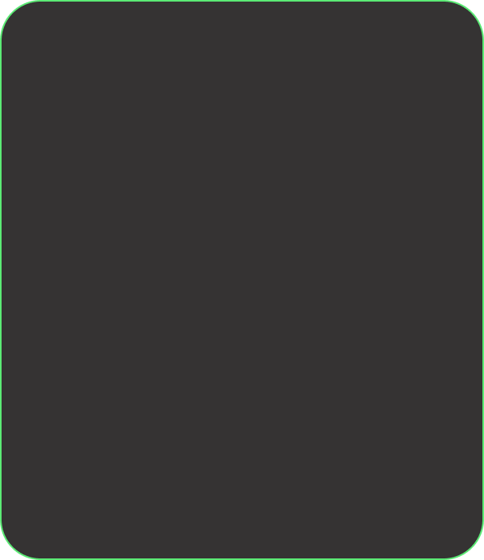

Sobre
O AcessoLivre, criado em Belo Horizonte, tem como principalmissão promover a acessibilidade por meio da disponibilização de informações precisas e atualizadas sobre estabelecimentos, espaços públicos e pontos de interesse.
A plataforma funciona de forma colaborativa, sendo alimentada por uma comunidade ativa de usuários, que
contribuem com
Dessa forma, constrói-se um mapa colaborativo de inclusão, no qual cada contribuição representa um avanço em direção a uma sociedade mais justa, inclusiva e acessível para todos.

1.2K+
LOCAIS AVALIADOS
4.8K+
USUÁRIOS ATIVOS
18K+
AVALIAÇÕES
32
BAIRROS COBERTOS